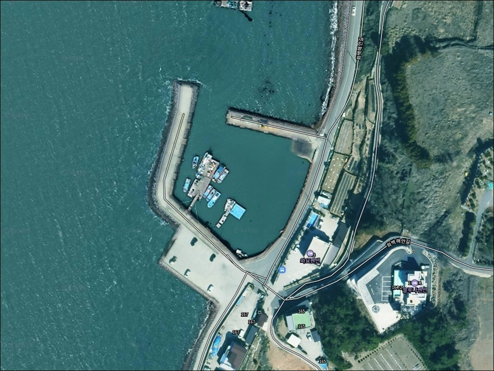
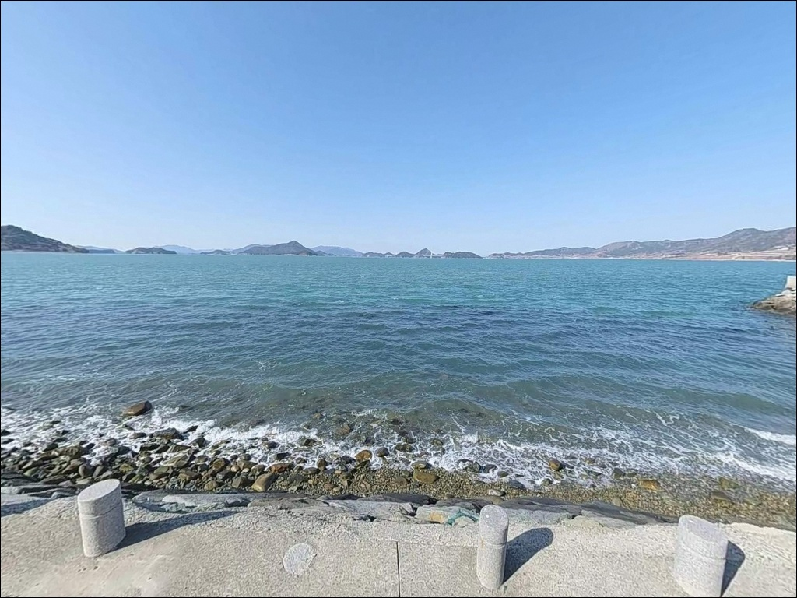
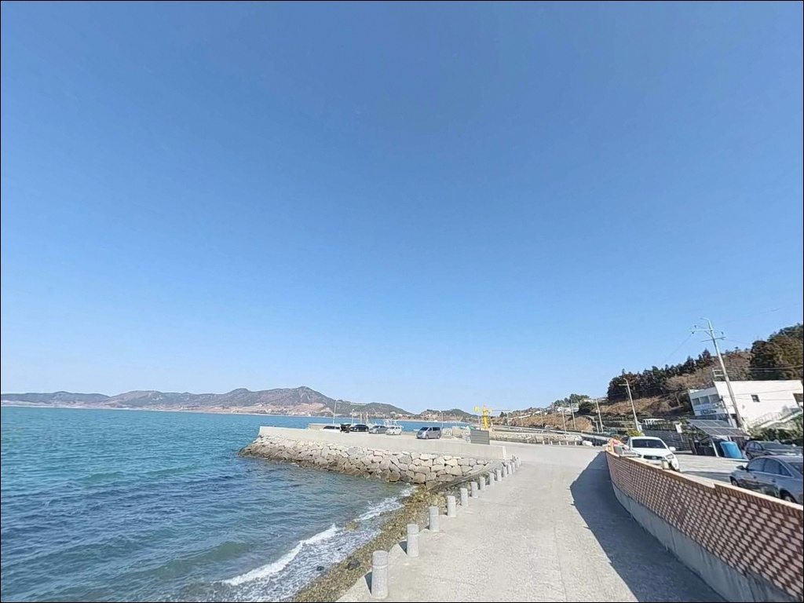
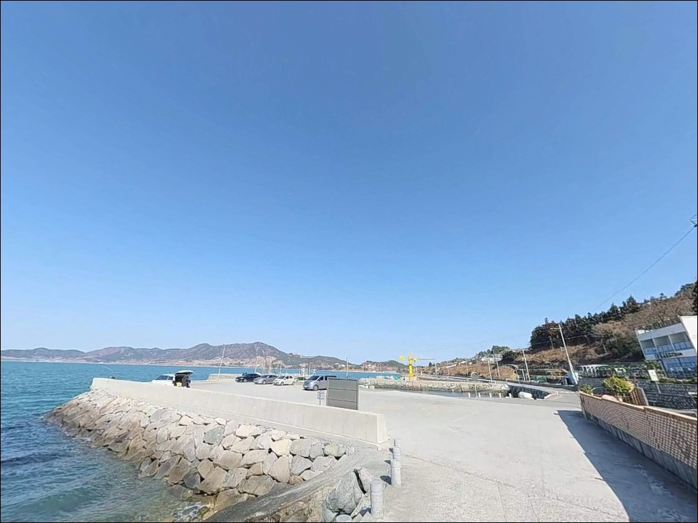
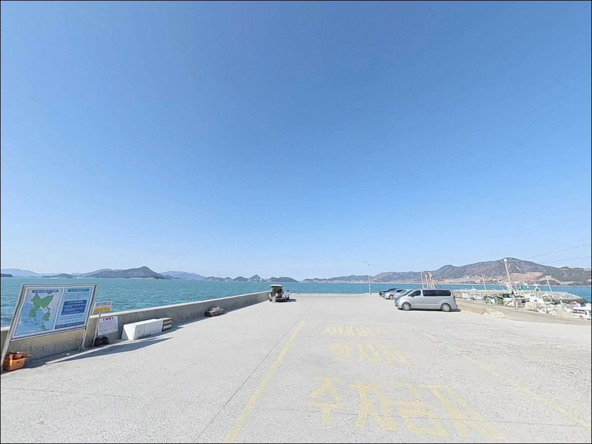
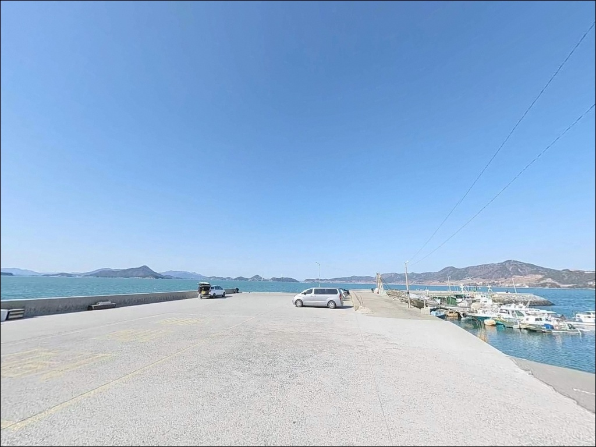
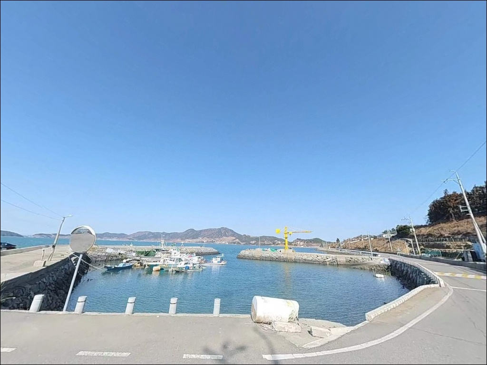
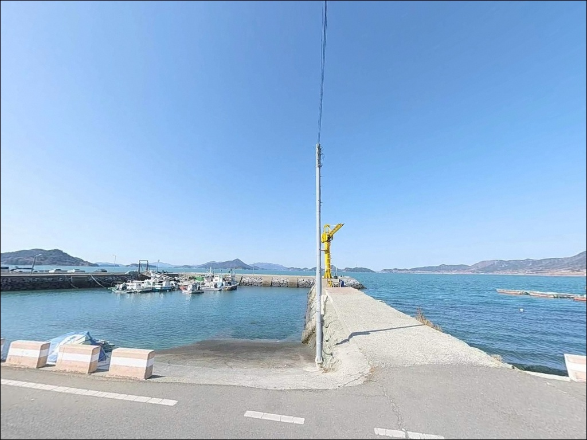
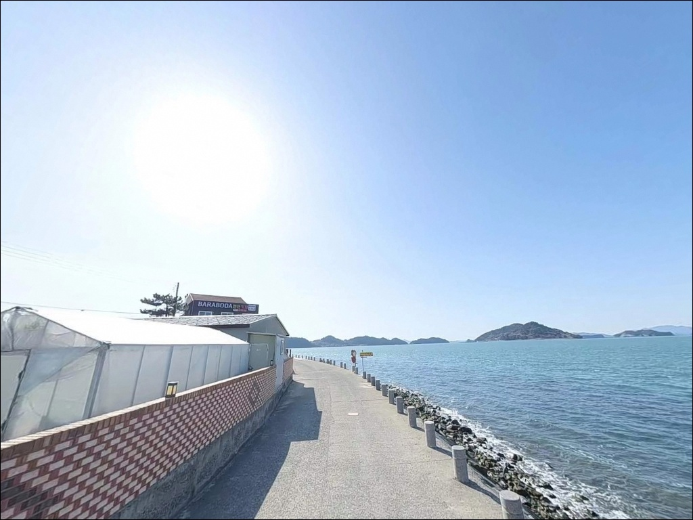

이 페이지에는 광고(제휴 링크 포함)가 있으며, 광고 링크를 통해 구매하면 운영자가 판매 수익 또는 수수료를 받을 수 있습니다. 포인트 사진: 카카오맵 스카이뷰·로드뷰. 이 페이지의 지도·사진 이미지는 카카오맵의 실제 서비스 이미지와 다를 수 있습니다.


사리 물때엔 채비 밀리던 여수 신기항, 정조 30분 전 되찾은 에깅 입질
포인트 안내
신기항
전남 여수시 화정면 백야리 497-4
백야도 신기항의 물골 구간에서
사리 물때를 무시하고 채비를 운용하면
어떤 방식으로도 조류를 버티기 어렵습니다.
외항 끝단과 방파제 정면을 가로지르는 강한 조류가
에깅과 찌낚시 채비 컨트롤 자체를 불가능하게 만들기 때문입니다.
에깅이란 갑오징어·무늬오징어를 대상으로
에기(인조 미끼)를 사용하는 루어낚시 방식입니다.
조류가 멈추거나 느려지는 타이밍에
홈통 구간 또는 방파제 끝단 물골 경계면을 노리는 방식이
이 포인트에서 에깅 반응이 올라오는 조건입니다.
이 글은 신기항의 진입 환경, 차박 여건,
물때별 낚시 방식 적합성에 집중합니다.
조황 단정이나 어종 보장은
이 글의 범위에 포함되지 않습니다.

1. 진입 동선과 차량 접근 조건
백야도는 백야대교(국도 77호선)를 통해
육지와 연결되어 있어
차량 진입 자체에 어떤 제약도 없습니다.
대교를 건너 우측 해안도로를 따라 이동하면
신기항까지 전 구간 2차선 포장도로로 연결됩니다.
대형 캠핑카나 트레일러도 진입이 가능한 도로 규격이라
차량 종류에 관계없이 접근할 수 있습니다.
항만 내부는 아스팔트와 콘크리트로 포장된
넓은 주차 부지가 확보되어 있습니다.
낚시 자리 바로 뒤편에 차를 세울 수 있는 구역이 많아
장비 이동 동선이 짧습니다.
대형 버스도 회차가 가능할 수준의 공간이 확보되어 있으며,
여객선과 어선 입출항이 빈번한 항구라는 점은
낚시 자리 선택 시 선박 동선을 먼저 확인해야 하는 이유이기도 합니다.

2. 차박 환경과 야간 체류 여건
신기항은 차박 여건 면에서
여수권 방파제 포인트 중 상위에 속하는 구조입니다.
항만 보안등과 여객선 터미널 주변 조명이 밝게 유지되어
야간에도 시야 확보가 충분합니다.
낚시객 상주 인원이 야간에도 상당한 수준이라
혼자 출조했을 때 느끼는 부담감이 상대적으로 적습니다.
백야도에서 유동 인구가 가장 많은 구역 중 하나인 만큼
관광객과 낚시객이 공존하는 분위기입니다.
완전히 조용한 차박을 원한다면
이 항구의 특성과 맞지 않을 수 있습니다.
차박 이용객이 많은 곳이어서
취사 후 잔여물 처리와
쓰레기 배출 관리가 특히 중요한 포인트입니다.


3. 주변 편의시설 및 인프라 현황
신기항은 편의시설 접근성이 이 지역 포인트 중 가장 양호한 축에 속합니다.
항구 도보 거리 내에 편의점, 식당, 카페가 밀집되어 있어
식수와 식사 보급에 어려움이 없습니다.
공중화장실은 인근 여객선 터미널 내에 있으며,
이용 가능 시간을 현장에서 확인하는 편이 좋습니다.
백야항 방향으로 1~2km 이동하면
더 큰 규모의 상권이 형성되어 있어
낚시 소품이나 긴급 보급이 필요할 경우
그쪽 동선을 활용할 수 있습니다.
응급 의료 시설은 백야대교를 건너
여수 시내까지 이동해야 하며,
차량 기준 20~40분 거리라는 점을 감안해
비상약품은 미리 챙겨두는 편이 안전합니다.

4. 진입 전 반드시 챙겨야 할 준비사항
신기항 방문 전 가장 먼저 확인할 것은 물때입니다.
바다타임에서 백야도 기준 물때를 확인하고,
사리 전후 조류가 급격히 강해지는 타이밍을 피해
출발 시각을 맞추는 것이 이 포인트 공략의 기본 전제입니다.
물골 조류가 최고조에 달하는 구간에서는
에깅과 찌낚시 채비 컨트롤 자체가 어려워집니다.
외항 테트라포트 구간은
조류가 강하고 수심이 깊어
낙수 시 매우 위험한 구간입니다.
구명조끼와 미끄럼 방지 신발은 필수이며,
테트라포트 위 이동은 최대한 자제하는 것이 안전합니다.
야간 낚시 시에는 헤드랜턴과 보조 조명도 반드시 챙겨야 합니다.
기상 변화에도 주의가 필요합니다.
남해안 특성상 돌풍이 예고 없이 발생할 수 있으며,
출조 당일 아침 기상청 해상 예보를 한 번 더 확인하는 습관이
헛걸음을 막는 가장 확실한 방법입니다.

5. 물골 조류가 만드는 낚시 여건 — 지형 분석
신기항의 핵심 지형 조건은 물골입니다.
백야도와 화양면 사이의 좁은 수로에 위치한 구조상
조류가 방파제 정면을 가로질러 강하게 흐릅니다.
방파제 끝단과 외항 쪽 수심은 10~12m 이상으로
깊게 형성되어 있으며,
바닥은 암반과 사니질이 혼재한 구조입니다.
외항 방향은 조류와 수심이 맞물리는 구간이라
회유성 어종이 이동하는 길목 역할을 합니다.
사리 물때에는 눈으로 확인될 만큼 조류가 강하게 흐르고,
조금 전후나 정조 타이밍에 채비 컨트롤이 가장 편해집니다.
조류의 방향과 세기를 파악하는 것이
낚시 자리 선택의 출발점입니다.
내항은 선박 정박 구역으로
수면이 잔잔한 편이나 낚시 공간이 제한됩니다.
외항 외벽 구간과 방파제 끝단 콧부리 자리가
이 포인트의 주요 낚시 구간이며,
밑걸림이 생기는 구간은 채비를 바닥에서 띄워 운용하는 방식이 유효합니다.
출조 전에 백야도 신기항 최신 조황을 꼭 검색해 보시길 권합니다.


6. 조류를 활용하는 낚시 스타일 제안
이 포인트에서 가장 잘 맞는 낚시는 에깅입니다.
조류가 죽는 홈통 지역이나
방파제 끝단 물골 경계면이
갑오징어와 무늬오징어가 반응하는 자리입니다.
조류가 강한 타이밍은 채비를 무겁게 교체하거나
정조 타이밍을 기다리는 방식으로 대응합니다.
찌낚시는 감성돔과 뱅에돔을 주 대상으로 공략합니다.
강한 조류에 대응하기 위해
고부력찌 채비가 이 포인트에 적합합니다.
조류를 태워 채비를 자연스럽게 흘리는 방식이
외항 가장자리 구간에서 유효하며,
들물과 날물 방향에 따라 유리한 자리가 달라집니다.
야간에는 볼락 라이트게임이 어울리는 구조입니다.
항만 보안등과 터미널 조명이 수면 위로 집어 효과를 만들어
볼락과 풀치(소형 갈치류)가 불빛 주변으로 모이는 패턴을 보입니다.
소형 지그헤드 채비를 방파제 가로등 아래에서 운용하는 방식이
야간 출조 시 효율적인 선택입니다.
원투낚시는 외항 물골 방향으로 채비를 멀리 보내
붕장어, 도다리, 참돔을 노리는 방식으로 운용합니다.
정조 타이밍에 바닥 탐색 위주로 운용하면
조류 영향을 최소화하면서 채비를 안정적으로 유지할 수 있습니다.

7. 대안 포인트와 플랜 B 동선
신기항이 너무 혼잡하거나
선박 입출항으로 낚시 공간이 좁아졌을 때
첫 번째 대안은 백야대교 아래 선착장입니다.
연육교 아래 선착장 구조로
방파제와 다른 수심·조류 패턴이 형성되며,
에깅과 원투낚시를 병행하기에 적합한 자리입니다.
백야등대 밑 갯바위도 주목할 만한 대안입니다.
같은 백야도 내에서 이동하는 거리가 짧으면서도
방파제와 다른 성격의 낚시를 즐길 수 있는 구간입니다.
갯바위 특성상 감성돔과 에깅 모두 노려볼 수 있으며,
산책로가 잘 정비되어 있어 접근 부담이 적습니다.
차박을 메인으로 삼으면서 조용한 환경이 필요할 때는
화양면 방향으로 나가 고지항이나 장수리 일대의
소형 선착장을 활용하는 동선이 있습니다.
신기항보다 인파가 적고
조용한 체류 환경을 원하는 낚시인에게
플랜 B 차박 거점으로 적합한 선택지입니다.

조류를 읽으면
신기항 물골이 달라 보입니다
에깅과 찌낚시를 즐기는 낚시인이라면
신기항의 물골 지형 조건은
충분히 기대를 걸어볼 만한 구조입니다.
외항 끝단의 깊은 수심과
꾸준한 조류 흐름이
복수의 낚시 방식을 동시에 운용하는 조건을 만들어주며,
야간에는 집어 효과를 활용한 볼락 라이트게임까지
이어갈 수 있습니다.
반면 사리 전후 물때를 무시하고 찾아가거나,
선박 입출항 스케줄을 모른 채 낚시 자리를 잡으면
낚시 운용 자체가 어려워지는 상황을 맞닥뜨릴 수 있습니다.
물때 확인, 선박 동선 파악, 구명조끼 착용,
이 세 가지를 갖추고 간다면
여수권에서 손꼽히는 에깅 포인트로서
기억에 남는 출조가 될 수 있는 곳입니다.
편의시설이 가까운 항구에서 낚시를 마치고
차 한 대 공간에서 하룻밤 조용히 머무는 차박 일정을 선호하는 낚시인이라면,
신기항은 낚시와 차박을 자연스럽게 엮을 수 있는
여수 화정면 권역의 요충지입니다.